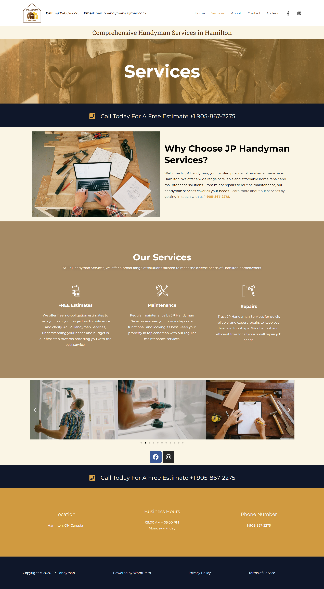
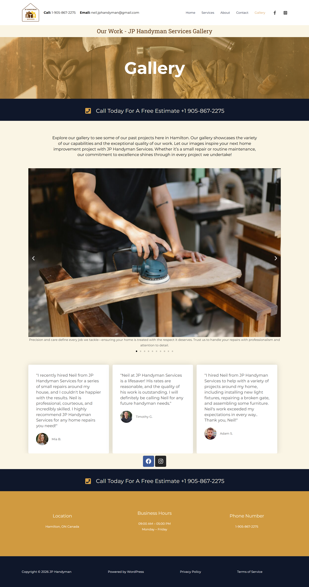
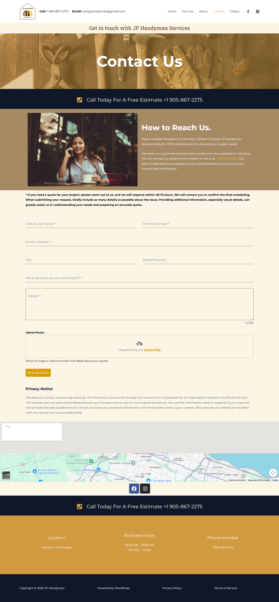

WordPress · SEO · Client Work
A production-ready business website built for a real client during practicum. A full handyman services site for Neil McGraw, complete with quote request forms, service pages, testimonials, Google Maps integration, and extensive technical documentation.
Role
Solo Developer
Client
Neil McGraw
Type
Practicum Project
Status
Production Ready
The Problem
Neil McGraw runs JP Handy, a handyman services business in Hamilton, Ontario. Despite having years of experience and happy clients, he had no website, no way for potential customers to request quotes online, and no way to build credibility before a first call.
The goal was to build a professional, production-ready website that would establish his online presence, build trust with potential clients, and make it easy to request a quote from any device.
The Solution
I designed and built a complete WordPress site using the Astra theme, customized to match Neil's brand. The site includes service pages, client testimonials, a photo gallery, Google Maps integration, and a detailed quote request form. I also produced extensive technical documentation covering every aspect of the site's setup, security, and ongoing maintenance.
Custom form with photo upload capability, service selection, and location fields. Responses delivered within 48-72 hours.
Full SEO setup with meta tags, sitemaps, Google Analytics integration, and keyword research documentation for local Hamilton searches.
SSL configuration, security plugin setup, privacy policy, terms of service, and a full security settings compliance checklist.
Full documentation package including backup procedures, routine maintenance tasks, performance optimization guide, and future enhancement suggestions.
Site Screenshots

Homepage - hero section with quote CTA

Services page - repair, improve, maintain

Gallery - client work showcase

Contact - quote request form with photo upload
Documentation
Client Communication
All client meetings were documented throughout the project, demonstrating professional communication and project coordination with a real client.
Reflection
Working with a real client taught me things no classroom project can. Requirements change, clients have opinions about colours, and "done" means something different to a business owner than to a student. Managing those expectations while delivering something professional was the biggest growth area for me on this project.
The documentation work was unexpectedly one of the most valuable parts. Writing a backup and recovery procedure or a security compliance checklist forces you to deeply understand what you built and why each decision matters.
The site is currently offline pending domain renewal on the client's end - a reminder that long-term site health depends on the client as much as the developer. All documentation and a local backup of the full site have been preserved.
Back to the beginning
CreativeSwap →